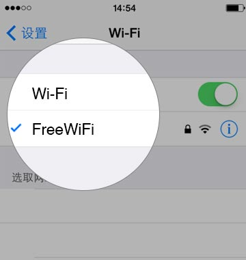
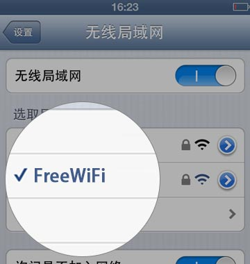
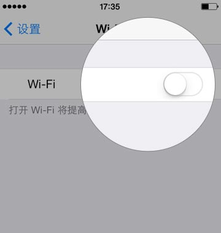
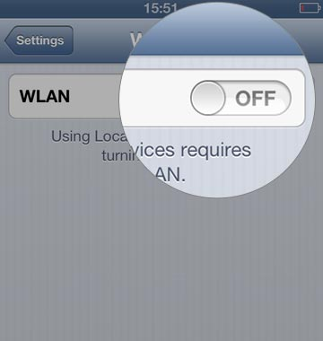

- Q：什么是扫一扫Wi-Fi？
- A：扫一扫Wi-Fi是通过微信扫一扫即可连接互联网的方便联网方式。
- Q：扫一扫Wi-Fi安全吗？
- A：微信只是提供了一种方便的联网方式。用户仍需要注意上网安全：
-
- 1）不要随意打开陌生链接；
- 2）不要随意下载陌生应用；
- 3）不要在不能确认的网站输入自己的微信、QQ和银行账号密码。
- Q：如何连接扫一扫Wi-Fi？
- A：
打开设备的“设置”-“Wi-Fi”，选取所提示的网络，直到网络已经连接上，回到微信即可上网。
- 
- 
- Q：如何通过微信扫一扫连接互联网？
- A：
打开微信的“发现”-“扫一扫”，扫描商家提供的扫一扫Wi-Fi二维码。
- Q：如何退出扫一扫Wi-Fi？
- A：打开设备的“设置”-“Wi-Fi”，切换到其它网络，或者，关闭“Wi-Fi”功能。
- 
- 